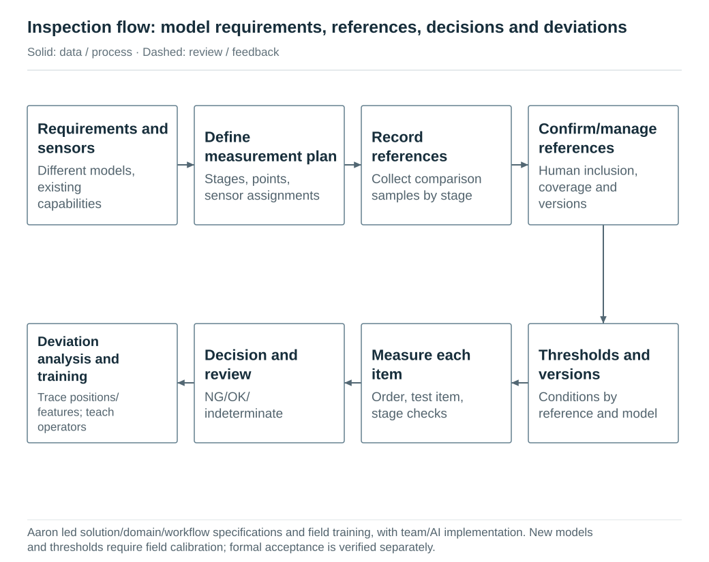
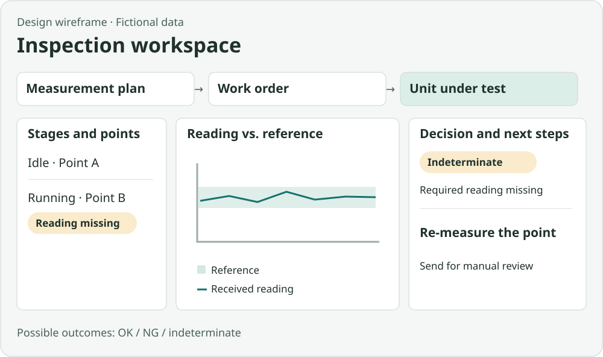

Context and objectives
Different equipment models require different stages and measurement points. Inspection needs configurable plans, trustworthy references, per-item decisions and deviation tracing rather than a single monitoring history containing every test item.
I lead development and own delivery for the inspection product, including the solution, domain model, algorithms, experiments, and on-site training. Phase 2 completed software acceptance. Phase 3 focuses on field validation of quality decisions.
- Turn model-specific requirements into reusable measurement plans: stages, points and sensor assignments.
- Establish comparison evidence through separate reference recording and libraries, then manage thresholds and versions.
- Execute per item and distinguish NG/OK/indeterminate results, trace deviations to positions and features, and teach users the workflow.

Inspection solution and modules
| Module | Design and system mechanism |
|---|---|
| Measurement plans: models, stages and points | Translate field inspection requirements into configurable operating/comparison specifications. Define applicable models, stage order, points, sensor configuration, measurement conditions and comparison rules; separate plan versions from execution records. |
| Reference recording and libraries | Build traceable evidence for good-reference comparisons. Reference and inspection runs serve different purposes. Recording requires human confirmation before inclusion, stage/point coverage checks and retained reference versions/use states. |
| Work orders, test items and runs | Test items in sequence on one fixture while keeping their records distinct. Orders adopt plans/references and create test items and runs. Stage preparation checks sensors and positions before acquisition starts. |
| Thresholds, NG/OK and human review | Ground decisions and identify when a decision cannot be made. Compare stages/points with their references and thresholds, retaining incomplete, insufficient-data or incompatible-reference reasons; manage changes through versions and reassessment rules. |
| Feature-deviation analysis and traceability | Trace an overall result to positions and features needing review. Show distributions, measured features and deviations against the adopted reference. Record reasons when required decision points lack data; deviation ranking does not identify a confirmed fault root cause. |
System architecture and workflow
Architecture overview
- Inputs
- Model-specific requirements, plan stages/points, sensor assignments, reference samples and test items.
- Process
- Plans define the method, orders adopt versions and test items undergo measurement runs. Separate reference recording, human inclusion and threshold management, then compare stages/points and investigate feature deviations.
- Outputs
- NG/OK/indeterminate decisions, comparison evidence and traceability across stages/points/features, and an inspection workflow operators can use and learn.
The three principal UI levels organize work through plan lists, work-order operations and test-item dashboards. Underneath are runs, stages/points, references and decisions. UI levels, order tabs and interpretation levels are different concepts.

Workflow diagram

Recording alone does not create a good reference
Reference recording and inspection are separate; recorded good units require confirmation for inclusion. Later versions coordinate reference collection across orders of the same plan version. Sample correction, reference inclusion and threshold calculation are distinct; NG samples do not directly become good references. Stage and point coverage still matters.
Version and threshold changes must preserve prior decisions
Plans and good references are managed by version and usage state, with each measurement retaining its adopted comparison basis. Later threshold or sample changes do not silently rewrite prior results; updates follow an explicit reassessment or remeasurement workflow.
Retain traceability and state data-retention limits
Retain relationships among measurements, decisions and references for quality review. Raw readings and WAV have retention periods; complete permanent reconstruction is not promised. Feature deviations locate comparison differences, while root causes and formal quality performance require validation.
Interface and interaction
Plans: one configurable method for different models
I designed requirement-driven measurement plans and stage/point specifications, linking sensor assignments to comparison conditions. Plan changes remain separate from versions used by existing orders to protect historical results.

Work orders: apply the plan to each test item
Orders connect test items, runs, comparison details and results. Operators select items and start measurement, with reference management, review and reports integrated into the workflow rather than deep navigation.

Measurement and interpretation: verify positions, then inspect deviations
Preparation is separate from measurement so operators can verify sensors, points and states first. After measurement, the overall decision leads to stage, point and feature differences for quality review and follow-up.

More technical detail
Align requirements with specifications
Clarify multi-point acquisition, baseline retakes, urgent orders and work-order handoffs, then align test items, measurement batches, decisions and reports. Public functionality, internal work and acceptance conditions follow the same operating flow.
Feed field issues back into the product
On October 12, 2026, I provided an on-site demonstration, training and troubleshooting, identified a host-clock offset behind a connection failure, and completed follow-up fixes. Field feedback informed product development; the visit does not constitute final acceptance.
Phase 3 QC: Defining and validating OK/NG decisions
After Phase 2 software functionality acceptance, I continue to analyze measurements and features. Phase 3 examines reference stability for conforming units, incorrect OK/NG decisions, and when the system should return an indeterminate result. I am preparing to align sample collection, quality labels, the QC question, and the scope of field validation with the customer.
Results and validation scope
Deliverables
Delivered configurable measurement, reference comparison and deviation analysis workflows, trained on-site users, and completed Phase 2 software functionality acceptance. Phase 3 quality-control work studies OK/NG separability and plans further data collection and field validation.
Validation and limits
Phase 2 software functionality acceptance is complete. Phase 3 requires traceable field samples to validate OK/NG decisions, with customer alignment on data collection, the QC question, and scope. Classification performance and applicable equipment models still require validation.